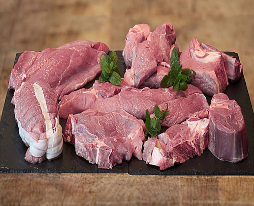
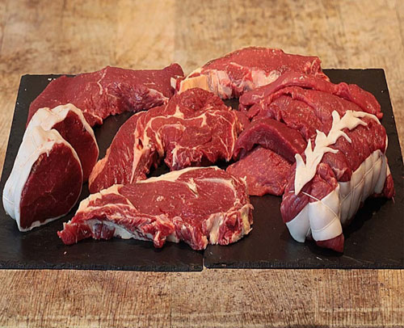
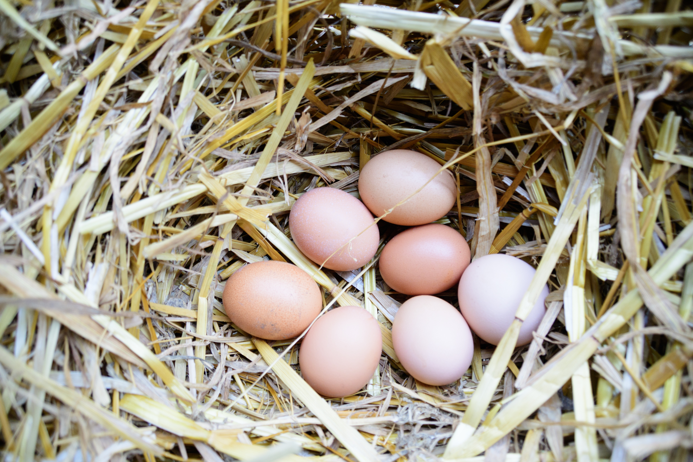

🥩 Viande
Comment faire cohabiter « Bien-être animal » et « vente de viande » ?
Nous pourrions prendre le parti de ne pas participer à ce « marché » de production de viande.
Mais alors ?
La demande existe et existera sans doute encore longtemps. En s'y soustrayant, ne laisserions-nous pas carte blanche aux grosses productions industrielles intensives, qui élèvent leurs animaux dans le seul souci de la rentabilité, source de souffrance pour leurs animaux, mais aussi pour les consommateurs.
C'est un très long débat, et bien malin qui pourra trancher. Mais nous sommes sûrs d'une chose ! De leur vivant, nos animaux sont heureux, vivent dans la nature et se nourrissent de bonnes choses. Et le consommateur mange sain !

🐄 Veau de lait et foin
Veaux de 5 à 8 mois, avec une viande rosée, très tendre et goûteuse. Disponible toute l'année.

🐄 Gros bovins (bœuf)
Agés minimum de 3 ans, exclusivement engraissés à l'herbe. Notre terroir s'y reflète, et la maturation avant la vente permet d'attendrir la viande et d'en révéler le goût. À la vente de fin mai jusqu'à l'hiver.
🐑 Mouton
En hiver, seulement des agneaux de bergerie sont disponibles et des broutards le reste de l'année.
Exclusivement engraissées à l'herbe. À la vente de mai à décembre.
Pourquoi une viande de veau rosée ?
La coloration d'une viande de veau dépend principalement de sa teneur en myoglobine, un pigment protéique lié au processus d'oxygénation du muscle. Une viande blanche en est globalement dépourvue : l'animal n'a pas eu l'occasion de faire ses muscles, faute d'espace pour courir, sauter… des activités que font pourtant beaucoup les veaux, qui sont très joueurs.
Nous faisons le choix que nos veaux accompagnent leur mère au pré et jouissent d'une liberté de mouvement. Leur viande a plus de goût et cette couleur rosée caractéristique.
La viande est proposée à la vente selon deux modalités : à la pièce ou en colis. Les colis de viande, de 4 à 10 kg, permettent à nos clients de se fournir à prix modéré un mélange de pièces à rôtir, pour le grill, à poêler ou encore à mijoter. De notre côté, cela nous permet de valoriser l'ensemble de l'animal, sans considérer les morceaux à mijoter comme des sous-produits.
Vous trouverez sur notre boutique en ligne les détails de la composition des colis et n'hésitez pas, lors de la collecte sur les marchés de plein vent, à demander conseil sur les différentes pièces de viande et les manières de les cuisiner.
🥚 Œufs
Sur les marchés vous trouverez nos œufs extra-frais, avec l'affichage des jours de ponte. Grâce à l'alimentation diversifiée apportée notamment par l'agroforesterie, les œufs sont d'une grande qualité et vous pourrez les utiliser tant pour cuisiner du salé que de la pâtisserie.
Leur grand enclos leur permet de ne jamais manquer d'herbe, un apport majeur participant à la qualité des œufs, en particulier les antioxydants, et à la bonne conservation dans le temps.

Le saviez-vous ?
La composition en acides gras dépend fortement de l'alimentation des poules : un régime riche augmente significativement la teneur en oméga-3, tandis que les phospholipides favorisent une meilleure biodisponibilité de ces nutriments. Les œufs sont donc une source importante d'acides gras essentiels.
Par ailleurs, les œufs sont une source exceptionnelle de protéines de haute valeur biologique, contenant environ 6 à 7 g de protéines par œuf de taille moyenne. Ces protéines sont dites « complètes », car elles fournissent les 9 acides aminés essentiels dans des proportions optimales pour l'organisme humain, avec une digestibilité très élevée.